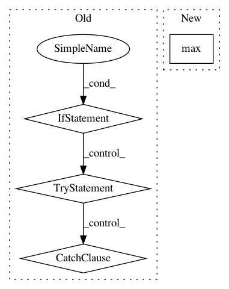

95d6cf194274246ee029416186f60806617d8fe6,engine/training.py,,run,#Any#Any#Any#Any#,24
Before Change
// tensorboard would like to find the logs from different training runs in separate subdirs
log_sub_dirs = [name for name in os.listdir(os.path.join(root_dir, "logs"))
if os.path.isdir(os.path.join(root_dir, "logs", name))]
if log_sub_dirs:
try:
previous_sub_dir = max([int(name) for name in log_sub_dirs])
except:
quit("Any immediate sub directories of the log directory must be integer-numbered")
if param.starting_iter > 0:
current_log_sub_dir = str(previous_sub_dir)
else:
current_log_sub_dir = str(1+previous_sub_dir)
else:
current_log_sub_dir = "0"
writer = tf.summary.FileWriter(os.path.join(root_dir, "logs", current_log_sub_dir),
sess.graph)
try:
print("Filling the queue (this can take a few minutes)")
After Change
log_sub_dir = str(max([int(name) for name in log_sub_dirs]) + 1)
elif log_sub_dirs and param.starting_iter > 0:
log_sub_dir = str(
max([int(name) for name in log_sub_dirs if os.path.isdir(os.path.join(root_dir, "logs", name))]))
else:
log_sub_dir = "0"
writer = tf.summary.FileWriter(os.path.join(root_dir, "logs", log_sub_dir),
In pattern: SUPERPATTERN
Frequency: 3
Non-data size: 4
Instances
Project Name: NifTK/NiftyNet
Commit Name: 95d6cf194274246ee029416186f60806617d8fe6
Time: 2017-07-10
Author: r.gray@ucl.ac.uk
File Name: engine/training.py
Class Name:
Method Name: run
Project Name: chartbeat-labs/textacy
Commit Name: 2bc9b7b91658baaf9717dba6565df203154d7cc9
Time: 2016-12-06
Author: burton@chartbeat.com
File Name: textacy/keyterms.py
Class Name:
Method Name: sgrank
Project Name: NifTK/NiftyNet
Commit Name: aef60c84d7ad8b5fb852f2dec16b2a8de838a321
Time: 2017-07-10
Author: eli.gibson@gmail.com
File Name: engine/training.py
Class Name:
Method Name: run